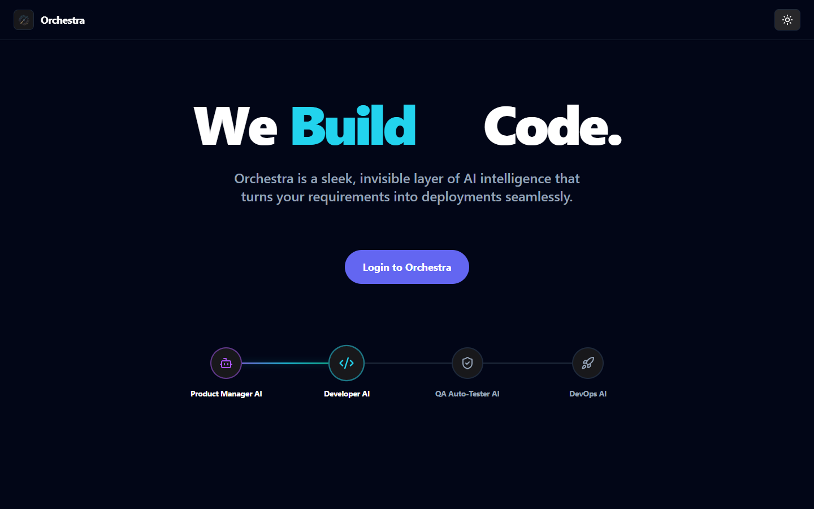

Orchestra is a sleek, invisible layer of AI intelligence that turns your requirements into deployments seamlessly.
The conductor of your entire SDLC
Modern engineering teams face fragmented AI tooling. Orchestra solves this with a unified AI automation layer across Jira, GitHub, and GitLab — configure once, automate everything.
| Layer | Role |
|---|---|
| 🎻 The Instruments | Connect your trackers (Jira, GitHub, GitLab) into a single unified view |
| 🎵 The Musicians | Autonomous AI agents assigned to specific ticket types — code, review, or search |
| 📜 The Sheet Music | Configurable workflows with triggers, conditions, and agent handoffs |
| 🎼 The Conductor | You — overseeing the entire lifecycle from a single dashboard |

Everything you need to automate your SDLC
Aggregate issues from Jira, GitHub, and GitLab in a single interface with real-time sync.
Create autonomous agents with custom instructions, tools, and skills. Three built-in templates to start immediately.
Register Model Context Protocol servers as tool sources. Supports stdio and HTTP transport with auto-discovery.
Connect GitHub Copilot directly as the agent execution runtime with configurable reasoning effort.
Design multi-step automated workflows with triggers, conditional branching, and agent handoffs.
All agent work runs asynchronously. Monitor execution progress via live SignalR job updates.
Explore the docs
Everything you need to install, configure, and get the most from Orchestra.
Prerequisites, quick start guide, and initial configuration.
System diagram, service breakdown, tech stack, and data flow.
Create, configure, and deploy autonomous AI teammates.
Connect Jira, GitHub, GitLab, and MCP servers as tool sources.
Unified view of all your issues across platforms.
Visual multi-step automation with triggers and agent handoffs.
Reusable instruction sets and tool configurations for agents.
Async execution, real-time status, session recovery.
Built with